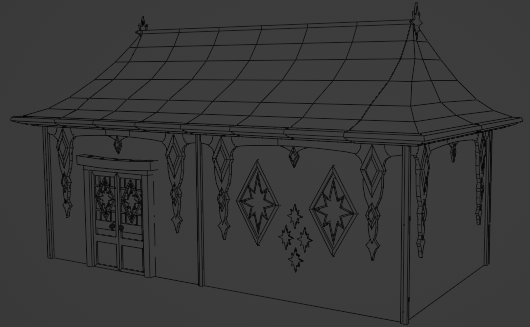

January 15, 2023 - Homepage Update
 Our first news in the new year! My year started with my family visit to Germany, which I had to postpone in November because of Corona. Therefore, the work on the game itself stopped a bit. But of course I didn't rest even on the trip. I used the time to update the homepage, among other things.
Our first news in the new year! My year started with my family visit to Germany, which I had to postpone in November because of Corona. Therefore, the work on the game itself stopped a bit. But of course I didn't rest even on the trip. I used the time to update the homepage, among other things.
Homepage update: Bachelor/ettes descriptions
The homepage has been revised. You will now find under the heading "Cast" all fixed planned Bachelors and Bachelorettes and their descriptions. Illustrations will be finished one by one by our dear Lura.
We hope you find the choice of our bachelors/ettes interesting and that there is something for everyone. We tried to create personalities that are not so common in farm games and also some that we like ourselves, obviously. Of course, you won't have a real idea until all the illustrations are done.
In addition, there is now a press kit that summarizes the MH project in order to be able to approach potential investors in the future (we still have practically no financial support. Thanks here to our two patreons who support us!).
Animals and cross-breeding
In Magical Harvest it is possible to cross breed animals magically. The corresponding minigame is now implemented in its base. Animals are still the central development point at the moment. Creating the 3D models, the textures, icons and animations takes a lot of time, but it's coming along!

Architecture
Marie is currently sitting on the design of the buildings for all 3 factions. I started creating the first building models from the concepts so far. We will probably go modular and create walls, windows, and roofs independently, then assemble the houses as we like.
Outlook
Animals will continue to be a central topic. I want to finish this part of the game first, before I start the next big programming part (NPCs).
In between, however, I will create the first assets for our city. I'm really looking forward to that!
Marie will continue to work on the concept of the city.
Best regards,
Your Magical Harvest Team
Isa & Marie